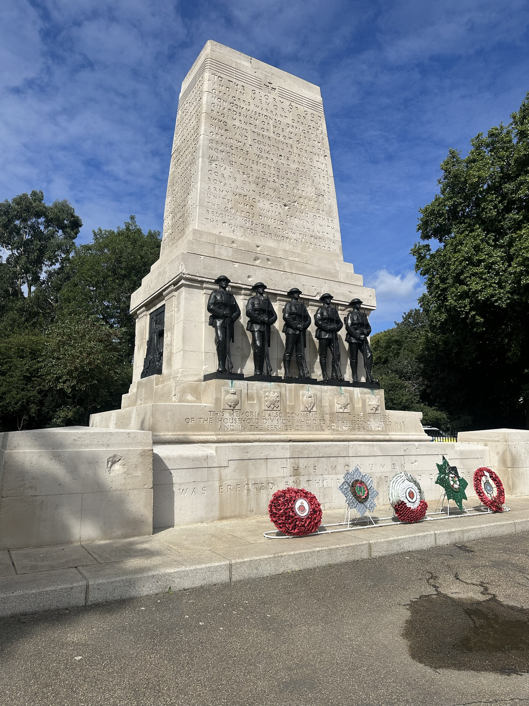

Inicio / Destino 06
Reino
Unido
Londres cuenta su historia mediante torres, palacios y monumentos que forman parte de la vida urbana.
Londres2 fotografíasFotos propias
Postales del Reino Unido
Historia · Monumentos

Big Ben
La torre del reloj y el Palacio de Westminster forman una de las imágenes arquitectónicas más conocidas de Londres.

Memorial a los caídos
El monumento inserta la memoria y el homenaje en el recorrido cotidiano por el espacio público londinense.